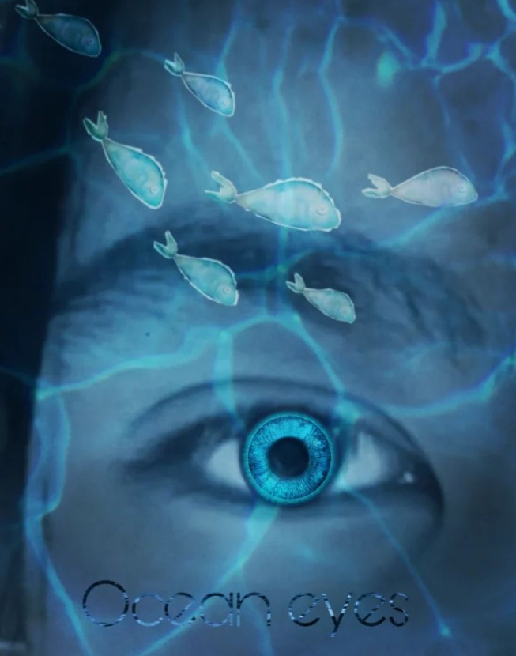
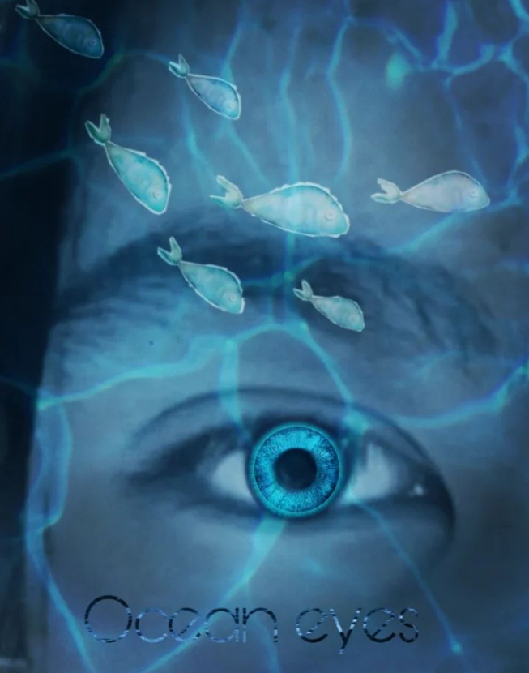

Hi, Gillian Here.

WELCOME TO MY ART GALLERY AND MY PERSONAL WEBSITE FOR ART-RELATED BASIS WITH GREAT INSPIRATION THROUGH CREATIVITY
ABOUT ME
My name is Gillian, just living in a normal life and welcome to my art gallery. As a student, I worked as a professional artist. I started drawing at a very young age to pursue my passion for making different projects through art as I allow myself. So here is my interactive website of my artworks in this portfolio website.
I started my art career ever since at the very young age. And back then it got my attention since I have a full interest of making artworks as my hobby. And even whenever I watched a random show or a series that I am interest in , I kinda like wanted to make an artwork out of it. Because it gave me much interest to make them. In the end, It became my hobby and inspired me well.
And at the current, I started to post my drawings on instagram in every free time when I wanted to. But suddenly stopped due to projects and assessments since it is way getting complicated and too busy to make artworks. And since I planned to make this portfolio website, here are my iconic artworks that will get everyone's attention.
ICONIC ARTWORKS


Here are the digital sketches which is very iconic in my art gallery. The softwares that I am usimg in these artworks is autodesk sketchbook. Since that's the only drawing app I know in softwares. It got anyone's attention after I created them. the first artwork is from the Star Wars series which is the Mandalorian. The second artwork is the Game of thrones artwork which is just the original character of mine that is originally made. And the third artwork, is Erwin Smith and his younger self from Attack on Titan series. And other fanarts that are released before and the current day.


Here are the bonus sketches, basically called the inky artworks. There are sketches that is been drawn in months and some of them are from last year.
Shilhuotte artworks


Here are the minimal artworks, they're all in shadows, no faces and not much designs just the figures of their body and the background colors.

An artwork that got anyone's attention, this mini comic I made a battle between two universes. Alucard against Diluc Ragnivndr.
Skills
Other skills than sketching as a skill, usually I also make a photo editing with art. I used to take pictures on random places even at home. I customize them with inspirations and other things.
 



here are the edited photos with digital art basis that is used in photoshop. These photos was edited in pics art. Which is basically from a mobile.
The first picture is just myself getting edited. The title of that edited image is snowblind. Which is inspired by the mortal kombat series. The second image is just an image of my hand namely the magma fist. The third images explains my injury, and it's basically inspired from the attack on titan series because things may go different when I looked at myself getting injured, I had an idea of making this artwork of myself turning into a titan. The fourth picture explains my previous dream, it is not actually a painting, but it's just inserting other images to make it like a realistic like it's from a film or a game that I've been through. The fifth image is just myself with a different eye color. The name of the image is called the ocean eyes which is actually my old userame eversince as a youth. The fourth picture explains the imaginable dark sketch. It's just an inky sketch of a girl on a swing. It's not in the actual sketch, but it is just an imagination after I am drew a tree. The fourth images is just me at the beach as i can imagine myself in the interstellar movie with inspiration. The eighth picture is captured when I am on the band performance. And his guitar pick was inspired from Genshin Impact as the guitar pick inspires the constellation of Master Diluc in the game. The last image explains my greatest nightmare after I woke up from it. The whole night, I was dreaming about fighting a titan, and right after I woke up, I looked at the wall, I imagined a titan was just there staring at my soul, and I immediately grabbed my phone, and start editing of myself battling against a titan. Since Attack on titan is one of my favorite show as a youth and until now.
Here are my instagram account to explore more about my artworks and my edited photos in the fourth account.


Here are my setup for drawing digital artworks. And photo editing.

SOLO LEARN CERTIFICATION